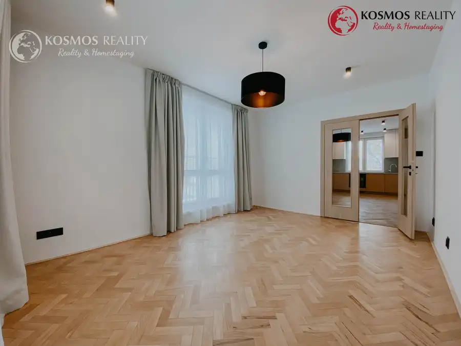
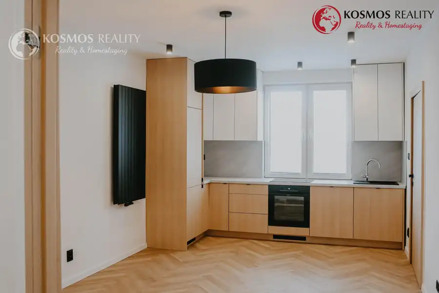
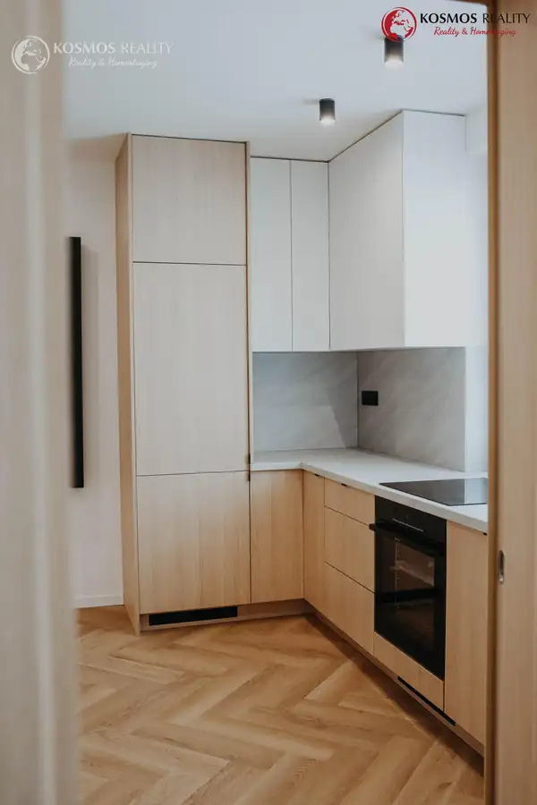
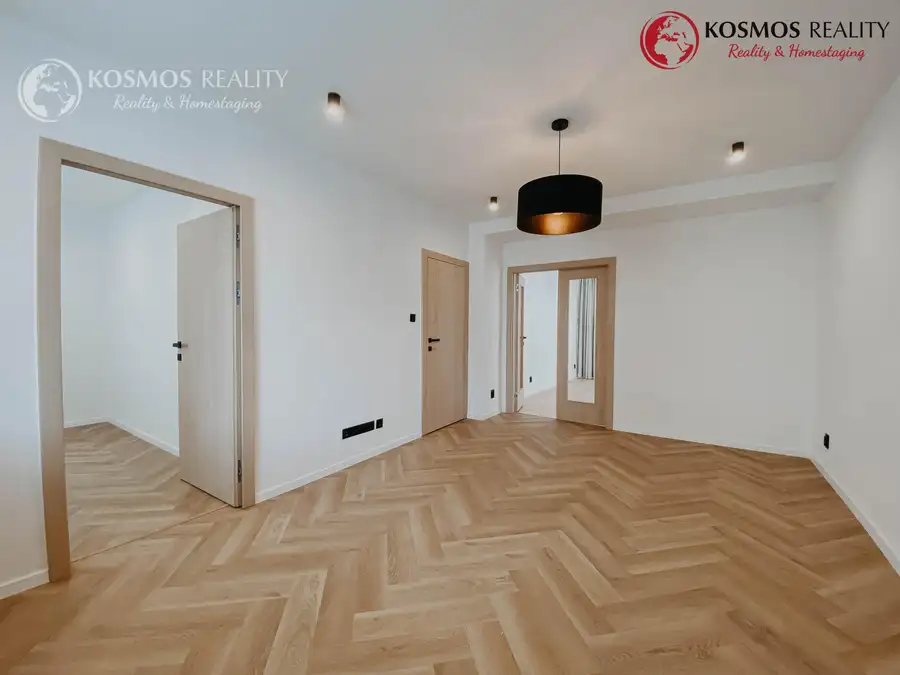
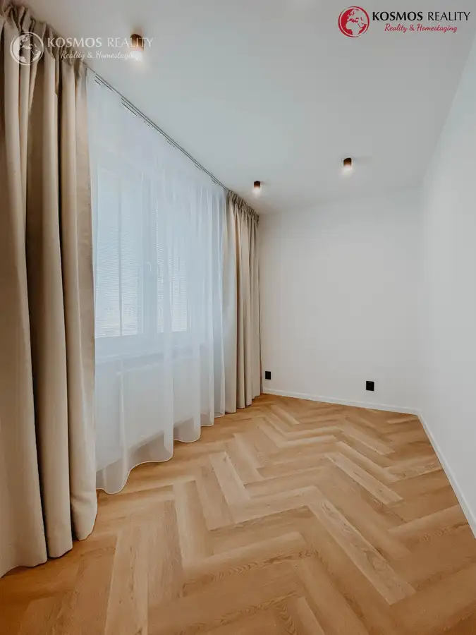

2,5 i byt, Národná trieda, nová rekonštrukcia, Košice-Sever
Sever, Košice





- Dispozícia2-izbový
- Plocha52.9 m²
- Poschodie1.
- StavKompletná rekonštrukcia
- VlastníctvoOsobné
O nehnuteľnosti
REZERVOVANÉ.Na predaj 2,5 izbový byt S BALKÓNOM, na ulici Národná Trieda, Košice - Sever.Kosmos Reality a Ivana Bobaliková Vám ponúkajú na predaj novinku v obľúbenej lokalite s kompletnou občianskou vybavenosťou, v blízkosti centra a zastávky MHD.Základné informácie o nehnuteľnosti: 1.poschodie k dispozícii výťah tehlový bytový dom zateplený bytový dom nová neobývaná rekonštrukcia podlahová výmera bytu 52,9 m2 príslušenstvo k bytu: 1x balkón orientácia okien na 3 svetové strany: sever, juh a západPôvodne 2- izb. byt prešiel premyslenou rekonštrukciou, vďaka ktorej vznikol praktický 2,5 izb. byt,ideálny pre pár, rodinku, alebo ako investícia na prenájom (vhodné pre študentov veteriny).Dominantou interiéru je spojenie moderných prvkov s pôvodným charakterom - v jednej izbe boli zachované a kompletne zrenovované drevené parkety, ktoré dodávajú priestoru jedinečnú atmosféru. Výhodou je, že byt je bez plynu, čo prináša vyšší komfort a bezpečnosť.Rekonštrukcia zahŕňa: nové vstupné dvere kuchynská linka na mieru so vstavanými spotrebičmi nové parkety v 2 izbách kvalitné materiály a vkusné prevedenie bonusom je vstavaná chladnička s mrazničkou, umývačka riadu Lokalita patrí medzi vyhľadávané: Národná trieda, Košice- Sever rýchla dostupnosť do centra zastávka MHD v blízkosti kompletná občianská vybavenosť ( Billa, poliklinika, služby )Tento byt je ideálnou voľbou pre tých , ktorí hľadajú moderné bývanie bez nutnosti ďalších investícií.Cena nehnuteľnosti: 229.000 €V prípade záujmu o obhliadku alebo viac informácii o predmetnej nehnuteľnosti, prosím kontaktujte maklérku Ivana Bobaliková 0948 320 302 alebo e-mailom: bobalikova@kosmosreality.skTúto nehnuteľnosť je možné financovať aj prostredníctvom hypotekárného úveru, pomôžeme Vám s jeho vybavením za výhodných podmienok. Cena nehnuteľnosti je uvedená vrátane provízie pre realitnú kanceláriu, kde je zahrnutý kompletný sprostredkovateľský servis od potrebných obhliadok nehnuteľnosti až k protokolárnemu odovzdaniu,zabezpečenie rezervačných a kúpnych zmlúv cez advokátsku kanceláriu ( autorizované aj neautorizované zmluvy), overenie podpisov predávajúcich, štandartný poplatok na kataster (vklad KZ).Spoluprácou s nami získate:- Exkluzívny prístup aj bez exkluzívnych zmlúv- Profesionálne a férove jednanie- Osobne nabrané ponuky- Komplexné sprostredkovanie predaja/ kúpy nehnuteľnosti- Žiadne skryté odmeny- Aktualizácia ponúk a cien- Aktívne riešenie dopytujúcich- Nová služba HOMESTAGING - kosmosreality.sk/home-staging
Parametre
- Cena vrátane energií
- Nie
- Druh
- 2 izbový byt
- Dátum zverejnenia
- 03. 04. 2026
- Orientácia
- Južná
- Plocha balkónu v m2
- 2 m²
- Podlažie
- 1
- Počet balkónov
- 1
- Rok poslednej rekonštrukcie
- 2026
- Stav nehnuteľnosti
- Kompletná rekonštrukcia
- Typ
- Predaj
- Typ konštrukcie
- Tehlová
- Vlastníctvo
- Osobné
- Vybavenie
- Balkón, Verejné parkovanie, Výťah
- Vykurovanie
- Ústredné
- Zariadenie
- Nezariadené
- Úžitková plocha
- 52.9 m²